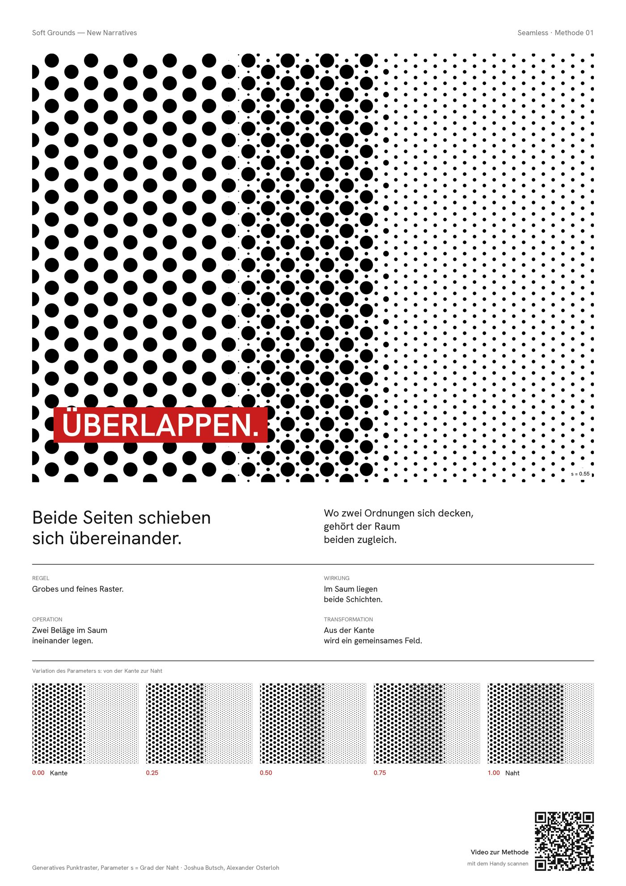

Je Methode das Video (s pendelt 0 → 1 → 0) und das A3-Blatt. Blatt antippen öffnet es groß.
Seamless
Eine Naht trennt nicht, sie verbindet.
Meaningful
Ein Material hat keine Bedeutung. Es bekommt eine.
Timeless
Das Objekt bleibt. Der Nutzer wechselt.